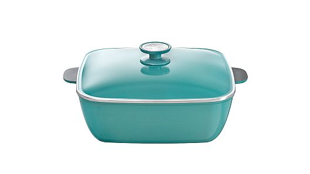
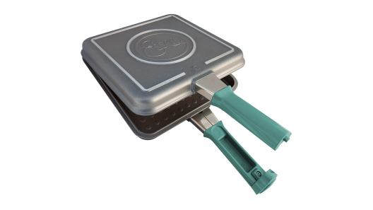
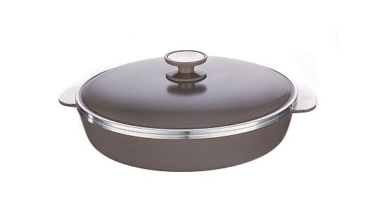

Deslizá y conoce cada uno de nuestros productos. Cada uno para uso particular, con diferenes colores y formas para que encuentros el tuyo ideal.
Conocé mas de nosotros en nuestro site oficial

Cacerola Cuadrada
Diseño y estilo en un solo producto. Su capacidad se destaca ya que permite desarrollar cocciones para entre 6 y 8 comensales
Cacerola Redonda

Piezas de amplio diámetro, ideal para familias numerosas de 5 o 6 personas. Es una cacerola ideal para la cocción de carnes rojas, guisos, tartas, presas de pollo, salsas, etc.
Sartén 28 y 24 cm

Estas sartenes ofrecen un amplio volumen, permitiendo la realización de platos y cocciones para familias de entre 5 y 6 integrantes.
Flip 2.0 desmontable
La renovada ESSEN FLIP 2.0 nos permite preparar gran cantidad de recetas gracias a su multifuncionalidad
Bifera con asas

¡Exclusivo diseño! Optimiza la distribución del calor logrando una cocción pareja y un sellado crocante.
Cacerola 18 cm con mango

Poseen una pequeña base, paredes laterales altas y mango lo que facilita el manejo de las piezas.
Fuente Rectangular

El diseño de la Fuente Rectangular permite distribuir uniformemente el calor por toda la superficie. Su forma hace que manipular los ingredientes durante la cocción sea mucho más fácil y seguro.
Cacerola 8 litros terra

Permite desarrollar cocciones para hasta 8 comensales. Es ideal para la cocción de: pastas, guisados, consomé, salsas, presas de pollo, cazuelas, pescados, etc.
Sartén 31cm con asas
Esta sartén tiene el tamaño ideal para realizar grandes porciones, sobre todo para recetas de tartas, tortillas, verduras rellenas y paellas. Su diseño facilita los desmoldes y las asas fijas ayudan a manejar el producto con mayor seguridad durante las coccione